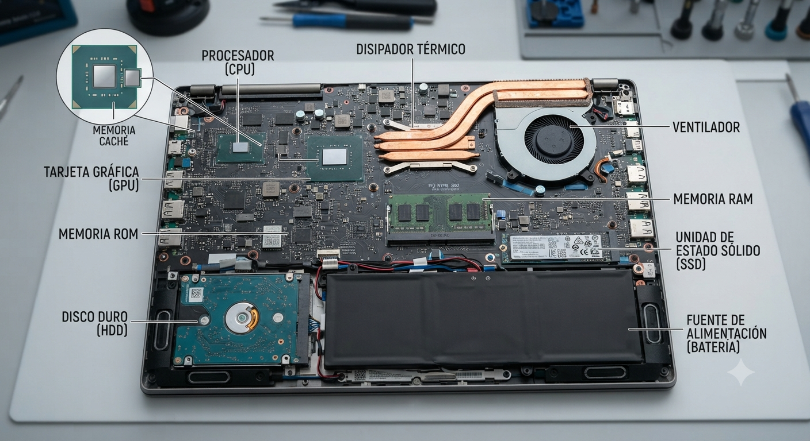

Introducción y elementos curriculares
Guía de inicio de la UP01: qué vas a aprender, cómo se evalúa y cómo aprovechar los materiales de la unidad.
Presentación de la unidad
La ofimática es el conjunto de herramientas, técnicas y conocimientos que permiten automatizar y optimizar tareas administrativas mediante el uso de equipos informáticos y aplicaciones digitales.
Aunque está relacionada con la informática, la ofimática se centra en el uso práctico de la tecnología para gestionar información, comunicarse y realizar tareas profesionales de forma eficiente.
En el ámbito sanitario, los sistemas informáticos forman parte esencial del trabajo diario. La gestión de citas, las historias clínicas electrónicas, la comunicación entre profesionales y la documentación administrativa dependen del correcto funcionamiento de los equipos, las aplicaciones y las redes.
💡 Idea clave: un técnico en documentación sanitaria no trabaja «con ordenadores»: trabaja dentro de un sistema informático que debe comprender y cuidar.
En todo el curso los conceptos se aplican a admisión, consultas médicas, laboratorios, archivo y administración, donde los equipos conectados gestionan información clínica y administrativa.
En el mostrador de admisión de un hospital, cada mañana se consultan agendas, se registran pacientes y se imprimen etiquetas. Todo ello depende de equipos, aplicaciones y redes funcionando correctamente.
La ofimática aplica la tecnología informática a las tareas administrativas. En sanidad, su correcto funcionamiento es imprescindible para la atención al paciente.

Objetivos de la unidad
Al finalizar la unidad serás capaz de:
- Identificar los componentes físicos (hardware) y lógicos (software) de un sistema informático.
- Utilizar adecuadamente los sistemas operativos y las aplicaciones más habituales.
- Conectar y manejar periféricos y puertos de comunicación.
- Trabajar en entornos de red compartiendo recursos e información.
- Aplicar medidas básicas de ciberseguridad y protección de datos.
- Acceder a Internet de forma segura y eficiente.
Identificar
Componentes hardware y software de un equipo.
Utilizar
Sistemas operativos y aplicaciones ofimáticas.
Conectar
Periféricos y puertos de comunicación.
Compartir
Recursos e información en red.
Proteger
Ciberseguridad básica y protección de datos.
Acceder
Internet de forma segura y eficiente.
Seis capacidades: identificar, utilizar, conectar, compartir, proteger y acceder. Todas ellas son competencias básicas del personal técnico en documentación y administración sanitarias.
Resultados de aprendizaje
RA1 · Mantenimiento de equipos, aplicaciones y red
«Mantiene en condiciones óptimas de funcionamiento los equipos, aplicaciones y red, instalando y actualizando los componentes hardware y software necesarios.»
Equipos
Identificar y mantener los componentes físicos del sistema informático.
Aplicaciones
Instalar, actualizar y utilizar el software necesario para la actividad profesional.
Red
Asegurar el funcionamiento de la red local y el acceso a los recursos compartidos.
Un centro de salud «funciona» cuando sus equipos, sus aplicaciones y su red funcionan. El mantenimiento no es tarea informática exclusiva: todos los profesionales colaboran en él.
RA1 integra tres frentes: equipos (hardware), aplicaciones (software) y red (conectividad).
Criterios de evaluación
Comprueban, uno a uno, que el resultado de aprendizaje se consigue. En esta unidad, los criterios a) a h) son:
- a Se han realizado pruebas de funcionamiento de los equipos informáticos.
- b Se han comprobado las conexiones de los puertos de comunicación.
- c Se han identificado los elementos básicos (hardware y software) de un sistema en red.
- d Se han caracterizado los procedimientos generales de operaciones en un sistema de red.
- e Se han utilizado las funciones básicas del sistema operativo.
- f Se han aplicado medidas de seguridad y confidencialidad, identificando el programa cortafuegos y el antivirus.
- g Se ha compartido información con otros usuarios de la red.
- h Se han ejecutado funciones básicas de usuario (conexión, desconexión, optimización del espacio de almacenamiento, utilización de periféricos, comunicación con otros usuarios y conexión con otros sistemas o redes, entre otras).
💡 Idea clave: los criterios de evaluación indican qué se va a observar para comprobar que has aprendido. Léelos como una guía de estudio.
Ocho criterios (a–h) que cubren pruebas de funcionamiento, puertos, hardware/software, red, sistema operativo, seguridad y funciones de usuario.
Contenidos básicos
Contenido oficial de la unidad (elemento curricular a):
-
Elementos de hardware
Componentes esenciales, procesamiento, almacenamiento, memoria, refrigeración, periféricos y puertos de comunicación.
-
Elementos de software
Software de sistema, de aplicación, utilidades e interacción hardware-software.
-
Sistemas operativos
Funciones básicas de usuario: conexión, desconexión, optimización del almacenamiento y uso de periféricos.
-
Redes locales
Componentes, configuraciones principales, intercambio y actualización de recursos.
-
Accesibilidad a Internet
Formas de conexión, seguridad en el acceso y resolución de problemas frecuentes.
💡 Idea clave: el bloque 01 (Hardware) concentra la mayor parte del contenido de esta unidad.
Cinco contenidos básicos que se desarrollan en seis bloques temáticos progresivos.
Metodología
Aprendizaje progresivo
Cada bloque parte de lo general hacia lo concreto, con microcontenidos fáciles de digerir.
Contexto profesional
Todos los conceptos se vinculan al entorno sanitario real (citas, historias clínicas, laboratorios).
Reflexión guiada
Preguntas para reflexionar que activan el pensamiento crítico antes de dar la respuesta.
Aula-taller
Actividades prácticas de identificación, conexión y configuración de equipos y red.
Trabajo cooperativo
Actividades en parejas o pequeños grupos para compartir recursos e información.
Aula virtual
Materiales accesibles desde Aules/Moodle y GitHub Pages en cualquier dispositivo.
💡 Idea clave: aprenderás haciendo, en contexto sanitario y con apoyo digital. Los materiales web acompañan, no sustituyen, el trabajo en el aula.
Método activo, contextualizado en sanidad, con microcontenidos, reflexión, práctica de taller y soporte en el aula virtual.
Instrumentos de evaluación
El resultado de aprendizaje se comprueba combinando varios instrumentos:
| Instrumento | Qué evalúa | Dónde |
|---|---|---|
| Cuestionarios | Criterios a), c), d), e), f) | Moodle / Aules |
| Actividades prácticas de taller | Criterios a), b), g), h) | Aula-taller |
| Preguntas para reflexionar | Comprensión y aplicación profesional | Materiales web |
| Observación directa y rúbricas | Funciones básicas de usuario y manejo de periféricos | Aula-taller |
| Trabajos individuales o en grupo | Síntesis y comunicación de contenidos | Aula / Aules |
En el puesto de trabajo, la evaluación continuará cada día: comprobar el equipo, conectar periféricos, proteger la información y acceder a los recursos de red son tareas que se evalúan en la práctica real.
Evaluación variada (cuestionarios, prácticas, observación y trabajos) que atiende tanto a conceptos como a procedimientos y actitudes.
Guía rápida de estudio
-
1
Lee cada microcontenido
Primero la explicación, después la idea clave y la aplicación sanitaria.
-
2
Responde antes de ver la respuesta
Las «preguntas para reflexionar» están pensadas para pensar primero.
-
3
Comprueba el resumen
Al final de cada concepto encontrarás un resumen con lo esencial.
-
4
Repasa con los mapas conceptuales
Los bloques terminan con un mapa que conecta todos los conceptos.
-
5
Practica en el taller
Identifica componentes reales, conecta periféricos y comparte recursos en red.
-
6
Propón dudas y avanza al bloque 01
Cuando domines esta guía, pasa al primer bloque de contenido: Hardware.
💡 Idea clave: el material está pensado para estudiarse en microsesiones. Quince minutos en cada microcontenido rinden más que una larga lectura sin pausas.